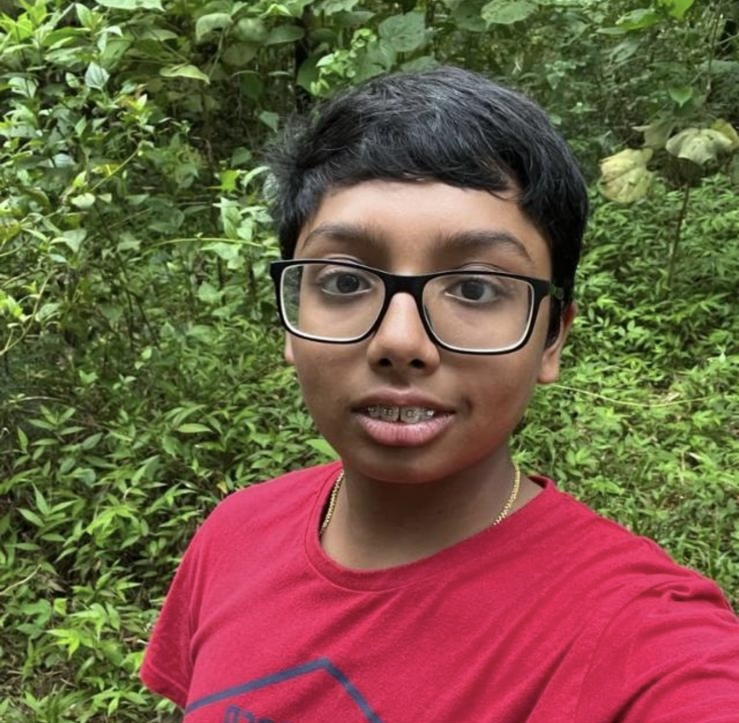

Early Life & Character
Henry’s early years were shaped by curiosity and creativity. He was once a popular YouTuber, demonstrating confidence, communication skills, and the ability to connect with others from a young age.
Despite facing academic challenges, Henry made a conscious decision to refocus. Through discipline and consistent effort, he transformed his approach to learning — a turning point that defined his growth.
He is widely described as kind, respectful, and hardworking — qualities that influence both his academic life and personal relationships.